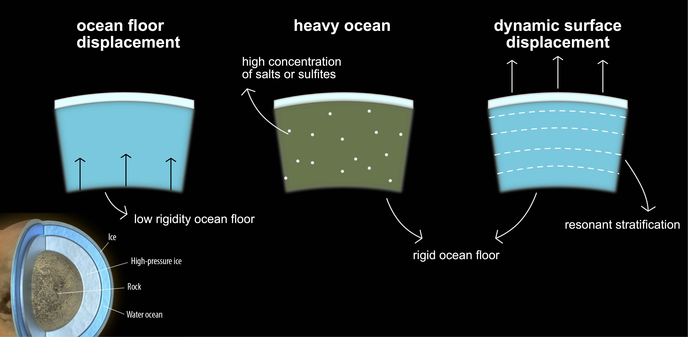

The tidal Love number \(k_\ell\) quantifies a planet's deformation response to external tidal forcing. For gas giants, this response couples to internal oscillations when forcing frequencies approach eigenmode frequencies. The computational approach requires solving the linearized oscillation equations in a rotating, stratified planetary model.
The perturbed gravitational potential exterior to the planet takes the form:
where \(k_\ell\) encodes the amplitude of the induced multipole relative to the equilibrium tide. In the quasi-static limit, \(k_\ell\) reduces to the classical fluid Love number. For dynamical tides, resonant enhancement occurs when \(\omega \approx \omega_n\) for some eigenfrequency \(\omega_n\).
Numerical implementation
The core algorithm integrates the coupled ODEs for radial displacement \(\xi_r\), potential perturbation \(\Phi\), and pressure \(P\). Full implementation available at github.com/yourusername/tide-solver.
def compute_love_number(model, ell, omega):
"""
Compute k_ell at forcing frequency omega.
See full implementation for boundary conditions
and convergence criteria.
"""
sol = solve_ivp(
lambda r, y: oscillation_eqs(r, y, omega, ell, model),
[r[0], r[-1]],
y0,
rtol=1e-10
)
# Extract k_ell from surface boundary conditions
R = model['radius'][-1]
k_ell = (sol.y[3][-1] * R / sol.y[1][-1] + ell + 1) / (ell + 1)
return k_ell
For Jupiter, rotation-modified response yields \(k_{22} \approx 0.59\) at Io's forcing frequency, enhanced from the static value \(k_{22}^{\text{static}} \approx 0.379\). This arises from Coriolis acceleration modifying the restoring force in the tidal flow (Idini & Stevenson, 2021).
Frequency-dependent \(k_{22}\) showing resonant peaks at internal mode frequencies.
References
Idini, B. & Stevenson, D.J. (2021). Dynamical tides in Jupiter as revealed by Juno. The Planetary Science Journal, 2(2), 69.
Geodetic observations constrain coseismic slip distributions through the elastic dislocation problem. Given surface displacement measurements \(\mathbf{d}\), we seek the posterior distribution over fault slip \(\mathbf{m}\):
The likelihood assumes Gaussian measurement errors with covariance \(C_d\). The prior \(p(\mathbf{m})\) enforces smoothness through Laplacian regularization, preventing unphysical oscillations in the slip distribution.
MCMC sampling strategy
Parallel tempering enables efficient exploration of multimodal posteriors common in high-dimensional slip inversions. The algorithm runs multiple chains at different temperatures, allowing heated chains to overcome local maxima. Complete implementation with convergence diagnostics at github.com/yourusername/slip-inversion.
def log_posterior(m, d, G, Cd_inv, alpha):
"""Log posterior for slip vector m."""
# Likelihood
residual = d - G @ m
chi2 = residual.T @ Cd_inv @ residual
# Laplacian smoothing prior
L = laplacian_matrix(fault_geometry)
roughness = m.T @ L.T @ L @ m
return -0.5 * (chi2 + alpha * roughness)
# Ensemble sampler with affine-invariant stretch moves
sampler = emcee.EnsembleSampler(
nwalkers, ndim, log_posterior,
args=(data, greens, Cd_inv, alpha)
)
sampler.run_mcmc(pos, 50000)
The 2019 Ridgecrest earthquake reconstruction (Ross et al., 2019) used this framework with 128 walkers over 50,000 iterations, converging within 72 hours on 16 cores. Marginal distributions revealed hierarchical fault activation with primary rupture on a conjugate system.
Posterior mean slip distribution from Bayesian inversion of InSAR and GPS data.
References
Ross, Z., Idini, B. et al. (2019). Hierarchical interlocked orthogonal faulting in the 2019 Ridgecrest earthquake sequence. Science, 366(6463), 346-351.
Titan's subsurface ocean supports internal gravity waves (g-modes) when salinity gradients produce stable stratification. The dispersion relation for linear waves in a Boussinesq fluid gives:
$$\omega^2 = N^2 \frac{k_h^2}{k^2}$$
where \(N(z)\) is the Brunt-Väisälä frequency, \(k_h\) the horizontal wavenumber, and \(k^2 = k_h^2 + k_z^2\). Resonance occurs when \(\omega\) matches Titan's orbital frequency \(\omega_{\text{orb}} = 4.56 \times 10^{-6}\) rad/s.
Modal structure calculation
The vertical structure equation reduces to a Sturm-Liouville problem. For realistic salinity profiles, numerical integration identifies resonant modes. Solver and analysis scripts: github.com/yourusername/titan-gwaves.
def brunt_vaisala(z, S, T):
"""Stratification frequency from salinity/temperature."""
rho = seawater_density(S, T)
drho_dz = np.gradient(rho, z)
g = 1.35 # m/s^2, Titan gravity
N2 = -(g / rho) * drho_dz
return np.sqrt(np.maximum(N2, 0))
def find_resonances(N_profile, z, omega_tidal):
"""Identify g-modes near tidal frequency."""
resonances = []
for n in range(1, 50):
omega_n = solve_eigenvalue(N_profile, z, n)
detuning = abs(omega_n - omega_tidal) / omega_tidal
if detuning < 0.1: # Within 10% of resonance
resonances.append((n, omega_n, detuning))
return resonances
For mean salinity below 5 g/kg (comparable to Earth's oceans), mode-2 resonance produces 15–45% enhancement in \(k_2\), reconciling Cassini's measurement \(k_2 = 0.616 \pm 0.067\) without requiring extreme ocean properties (Idini & Nimmo, 2024).

Interior models showing resonant stratification scenarios for Titan's ocean.
References
Idini, B. & Nimmo, F. (2024). Resonant stratification in Titan's global ocean. The Planetary Science Journal, 5(1), 15.